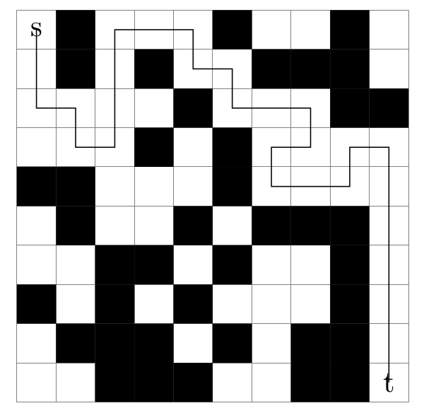

Overview
The longest path problem (LP) is to find a simple path of maximum length between two given vertices of a graph where length is defined as the number of edges or the total weight of the edges in the path. The problem is known to be NP-complete and has several applications such as designing circuit boards, project planning, information retrieval or patrolling algorithms for multiple robots in graphs.We proposed an optimal algorithm for solving the longest path problem in undirected graphs. By using graph partitioning and dynamic programming, we designed an algorithm which is significantly faster than other state-of-the-art methods and can solve more instances. Here we provide the implementation of the algorithm as easy to use open source software.

News:
8th January 2024: Moved the repo to github.
1st Mai 2019: The paper that explains our (parallel) algorithms has been accepted at the 12th Symposium on Combinatorial Search.
18th January 2019: Updated the release, which now contains shared-memory parallel algorithms.
8th March 2017: Provided benchmark problems.
16th February 2017: Initial release.
14th February 2017: Published arXiv report. Link to PDF.
Licence
The program is licenced under GPL 3.0. Please let us know if you need a commercial licence. (We also give away MIT licence on request).If you publish results using our algorithms, please acknowledge our work by quoting the following paper (PDF):
@article{balyo2017,
AUTHOR = {Balyo, Tomas and Fieger, Kai and Schreiber, Dominik and Schulz, Christian},
TITLE = {{Finding Optimal Longest Paths by Dynamic Programming in Parallel}},
BOOKTITLE = {Proceedings of the 12th Symposium on Combinatorial Search (SoCS'19)},
PUBLISHER = {{AAAI} Press},
YEAR = {2019}
}
Download
Benchmark Graphs
We provide a benchmark with various instances for the longest path problem. The benchmark consists of two main categories ``mazes'' and ``others''. The instances we provide here are either in DIMACS format (mazes) or in the METIS format (others). Mazes have been generated using the maze generator provided in the KaLP framework using a different random seeds, side lengths of the mazes and amounts of blocked cells. The category ``others'' contains subgraphs of other publicly available graphs.- Download the benchmark here: lp_benchmark.tar.gz
Support
- Write us an email if you need support!
- We are glad for any comments and error reports (or even bug fixes or feature requests) that you send us.
- Graphs used in our papers will be provided to you on request!